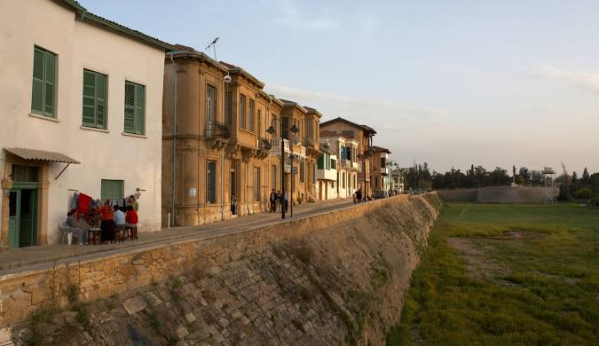
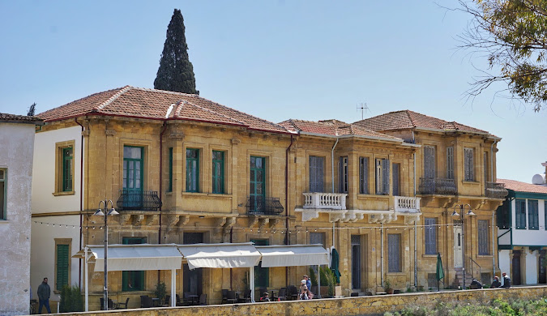

Arabahmet Mahallesi, Lefkoşa’nın surlar içindeki en eski ve tarihi yerleşim bölgelerinden biridir. Osmanlı döneminden kalma konakları, dar sokakları ve taş yapılarıyla dikkat çeker. Mahalle adını, Osmanlı döneminde bölgede yaşayan Arabahmet Paşa’dan almıştır. Uzun yıllar boyunca farklı kültürlerin bir arada yaşadığı bir yer olmuş ve bu durum mimarisine de yansımıştır. Günümüzde restore edilen yapıları ve kültürel dokusuyla hem yerli halkın hem de turistlerin ilgisini çeken önemli bir bölgedir.

Ana Sayfaya Dön